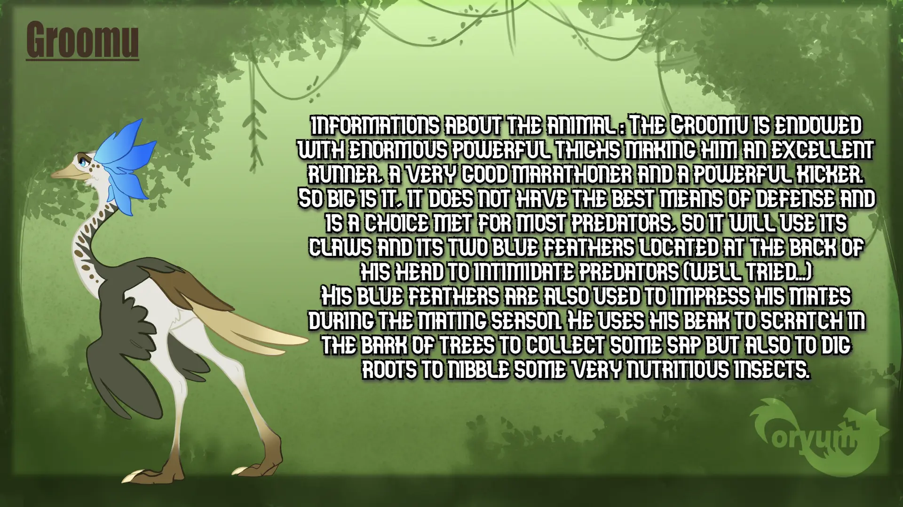
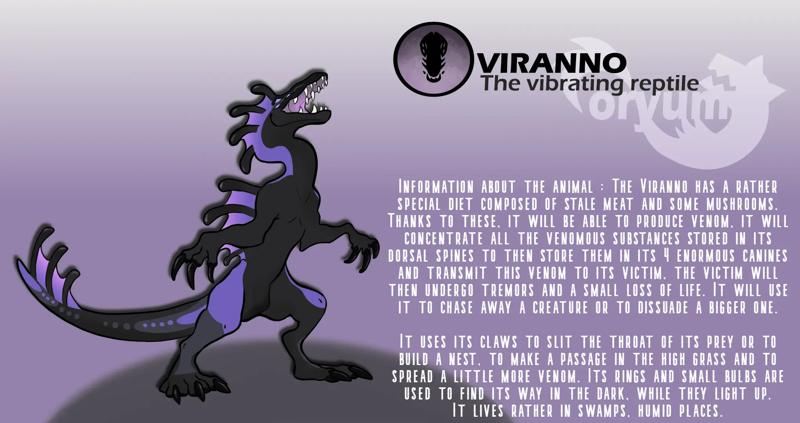
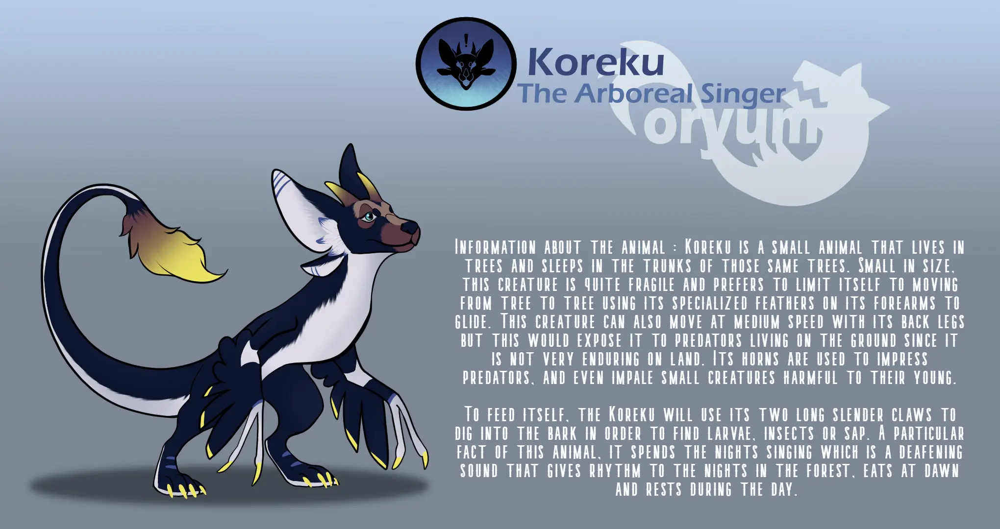

Information
  
Télécharger
Oryumé est un monde MMORPG incroyable qui rappelle un royaume fantastique rempli d'aventure, d'excitation et de danger. Ce jeu incroyable offre aux joueurs la possibilité de s'immerger dans un monde où ils peuvent vivre et jouer en tant que créature de leur choix. Que vous souhaitiez être un dragon féroce, un loup rusé ou une licorne gracieuse, vous pouvez être ce que vous voulez dans ce monde. L'un des aspects les plus fascinants d'Oryumé est ses modes multijoueur et solo. En mode multijoueur, les joueurs peuvent interagir les uns avec les autres et participer à des quêtes, des batailles et des aventures excitantes. Ils peuvent s'unir pour affronter de puissants ennemis ou explorer de nouvelles régions du monde ensemble. Le sens de camaraderie et de coopération en mode multijoueur est vraiment remarquable, et les joueurs peuvent se lier d'amitié avec d'autres personnes qui partagent leur amour pour ce jeu incroyable. D'autre part, le mode solo offre aux joueurs la possibilité de se lancer dans un voyage épique à travers le mode histoire. Ils peuvent explorer le vaste et complexe monde d'Oryumé à leur propre rythme et découvrir la riche mythologie et l'histoire qui rendent ce jeu si spécial. Les joueurs peuvent partir à la recherche de quêtes palpitantes, résoudre des énigmes et découvrir des trésors cachés en progressant dans le jeu. Une autre fonctionnalité fantastique d'Oryumé est la possibilité de chasser, d'élever et de construire un nid. Les joueurs peuvent chasser de la nourriture et des ressources pour survivre dans le jeu. Ils peuvent également construire leurs propres nids et établir leurs propres territoires dans le jeu. Dans l'ensemble, Oryumé est un monde MMORPG incroyablement immersif et excitant qui offre aux joueurs une expérience de jeu unique et inoubliable. Que vous préfériez le mode multijoueur ou solo, vous trouverez une multitude d'aventures, d'excitation et de défis dans ce jeu incroyable. Alors venez rejoindre le monde d'Oryumé, où tout est possible et tout peut arriver !